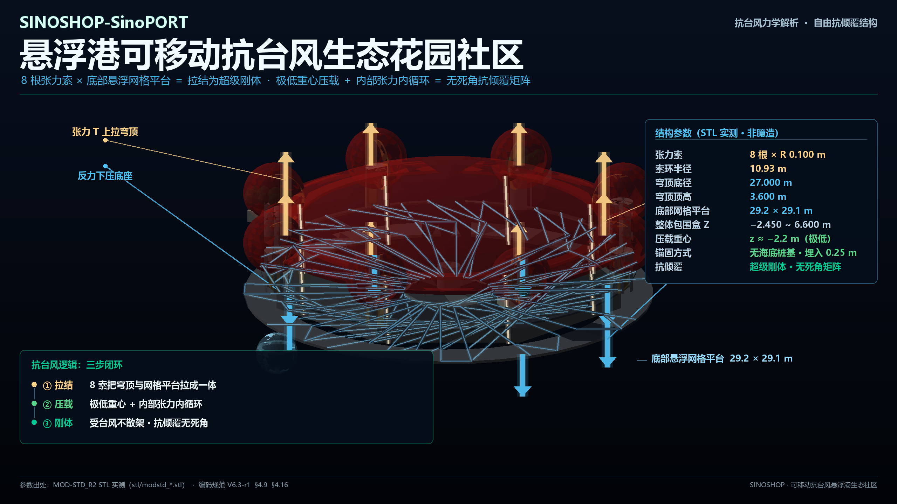
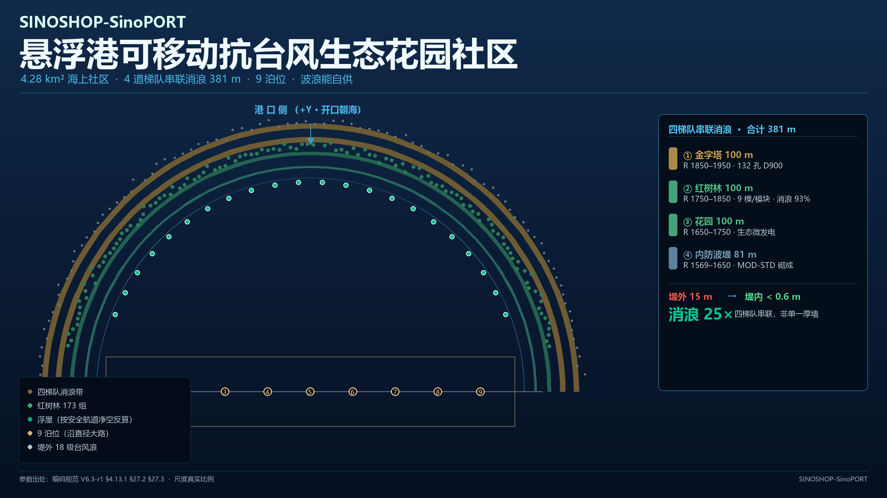
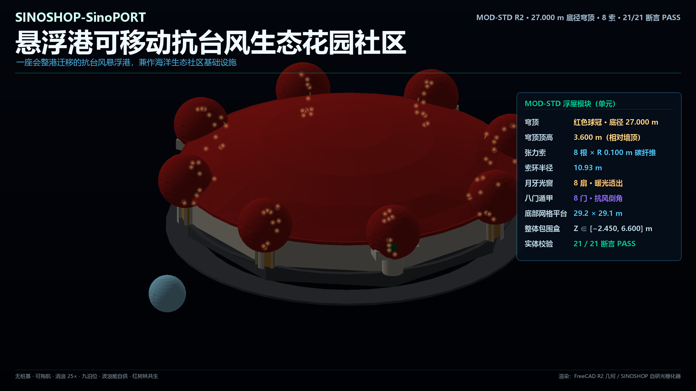
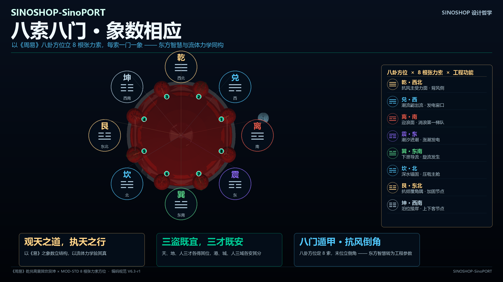

一座会整港迁移的抗台风悬浮港，兼作海洋生态社区基础设施。
无桩基 · 可拖航 · 消浪 25× · 九泊位 · 波浪能自供 · 红树林共生。
无桩基纤维混凝土复合浮体。悬浮港在离岸工况下配置锚泊定位系统，按 DNV-ST-N001 规范设计；离岸距离以锚泊分析结果与水深条件为前提。
四道梯队串联消浪体系：金字塔 → 红树林 → 花园 → 内堤，合计 381 m。18 级台风浪进不到内港。
悬浮红树林是第二梯队的消浪结构体，不是装饰；空中花园与海洋能共同构成社区生产力。
海生电、生态、泊位数据全部上链存证；多签 3/5 加 48 小时时间锁，收益分配过程公开可审计。
1080×1920 · 30.000 s · 社交媒体版
浮屋不是「一个大浮箱」，而是三段闭环：
① 拉结 8 根张力索（R 0.100 m，索环半径 10.93 m） 把红色穹顶（底径 27.000 m）与底部悬浮网格平台（29.2 × 29.1 m）拉成一体。 索受拉，两端互为反力，构成预应力自平衡。
② 压载 极低重心压载 （重心 z ≈ −2.2 m，整体包围盒 Z ∈ [−2.450, 6.600] m）提供复原力矩， 内部张力内循环让扰动在结构内消化。
③ 刚体 两段合起来， 浮屋成为无死角抗倾覆矩阵—— 抗台风不散架，抗涌浪不侧倾。
另需注意：它不依赖海底桩基—— 锚固为埋入 0.25 m 的自锚式，因此整座港可以整体搬迁。


「观天之道，执天之行」
—— 取象立数，因数定形。观测海况 → 建立参数 → 形成可建造的实体。
这不是附会工程，而是同构：象数负责「形」，力水负责「真」。 八根张力索按八卦方位布置，每一处的分工都按该方位的实际水动力特性确定—— 迎浪面做消浪、进潮面做发电、背风面做抗风、出流面做导流。
| 卦 | 象 | 方位 | 工程功能（实测） |
|---|---|---|---|
| 乾 | 天 | 西北 | 抗风主受力面 · 背风侧 |
| 兑 | 泽 | 西 | 潮流能出流 · 发电窗口 |
| 离 | 火 | 南 | 迎浪面 · 消浪第一梯队 |
| 震 | 雷 | 东 | 潮汐进潮 · 涨潮发电 |
| 巽 | 风 | 东南 | 下泄导流 · 旋流发生 |
| 坎 | 水 | 北 | 深水锚固 · 压载主舱 |
| 艮 | 山 | 东北 | 抗倾覆角隅 · 加固节点 |
| 坤 | 地 | 西南 | 泊位接岸 · 上下客节点 |
「三盗既宜，三才既安」的工程读法： 天借地的浮体承载，地借天的水能驱动，人借天地的产出受益—— 三者各得其位（安），互为条件（宜），系统才成立。

不是 AIGC 的塑料幻觉，是对物理数学规则精益求精的坚持！SINOSHOP-SinoPORT 悬浮港工程展示！⚓ 无桩基·超级刚体：8 根张力索死死锁住红色穹顶，台风根本推不动！ 🌪️ 25 倍极限消浪：15 米狂浪进港，秒变 0.6 米静水！🌿 八卦阵 + 红树林： 硬核力学与东方哲学的完美交融。每一个数字，都有代码断言作证；每一根拉索， 都经得起船级社的审查。看中国硬核工程师如何把《易经》和流体力学‘焊牢在大海上’！
工程口径说明（本页表述以《编码规范 V6.3-r1》为准）： 消浪性能以透射系数区间表征，依据缩尺模型与 CFD 模拟给出，不采用单一固定百分比； 15 m → 0.6 m 为四梯队串联体系的浪高比值（25×）。 制造装配公差执行船级社（如 ABS）建造规范，关键连接部位按疲劳要求单独规定。 离岸工况配置锚泊定位系统，按 DNV-ST-N001 规范设计，离岸距离以锚泊分析结果与水深条件为前提。 抗台风下沉、消防及救生舱脱离均采用硬线/就地逻辑控制的自动触发； 区块链仅作为事后存证与审计，不参与安全动作的实时决策回路。
水动力与污损：水动力分析中已计入目标服役周期内的污损粗糙度增长对阻力与附加质量的影响，并设置可检查、可清理的防污措施。
制造与装配：制造装配公差执行船级社（如 ABS）建造规范，关键连接部位按疲劳要求单独规定，不以 0.1 mm 作为全结构通则。
安全动作优先级：抗台风下沉、消防及救生舱脱离均采用硬线/就地逻辑控制的自动触发；区块链仅作为事后存证与审计，不参与安全动作的实时决策回路。
防波堤 四梯队串联 381 m = 81 + 100×3
① 金字塔 100 m（18 m 立方 / 132 孔 D900 / 16 竖管）
② 红树林 100 m（9 棵/模块 · 透射系数区间）
③ 花园 100 m（生态微发电）
④ 内防波堤 81 m（MOD-STD 砌成 · 外围 300 m 全 MOD-DM）
消浪 外浪 15.0 m → 内浪 < 0.6 m 衰减 25×
浮屋 穹顶底径 27.000 m · 顶高 3.600 m
张力索 8 根 × R 0.100 m · 索环半径 10.93 m
底部网格平台 29.2 × 29.1 m
整体包围盒 Z ∈ [−2.450, 6.600] m · 实体校验 21/21 PASS
泊位 9 个 · 总宽 513 m · 全部含于 R=1650 半圆内
安全余量 334.9 m ≥ 红线 300 m
水道 左6/右6 各 52.5 m · 合计 105 m · 半环弧长 5,101 m
浮屋 / 球船数量按安全通航净空反算（不写死）
能源 多能互补能源闭环 · 六条海洋能路径（绝对值见专项报告）
冬季 冬季大道左右各 3,000 m × 54 m · 近岸 1,500 m 结冰
波浪四点递进：结冰 0 → 连接段 3 m → 内港 <0.6 → 堤外 15 m
成本 悬浮港 28.03 亿 vs 陆上 33.5 亿 · 工期缩短 75%